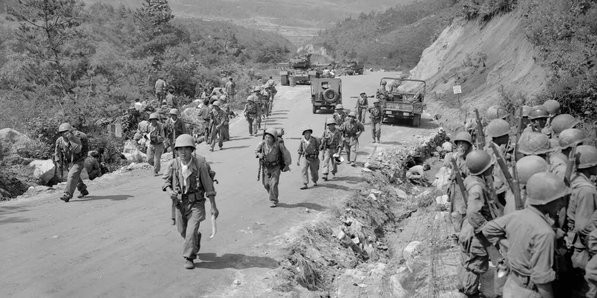
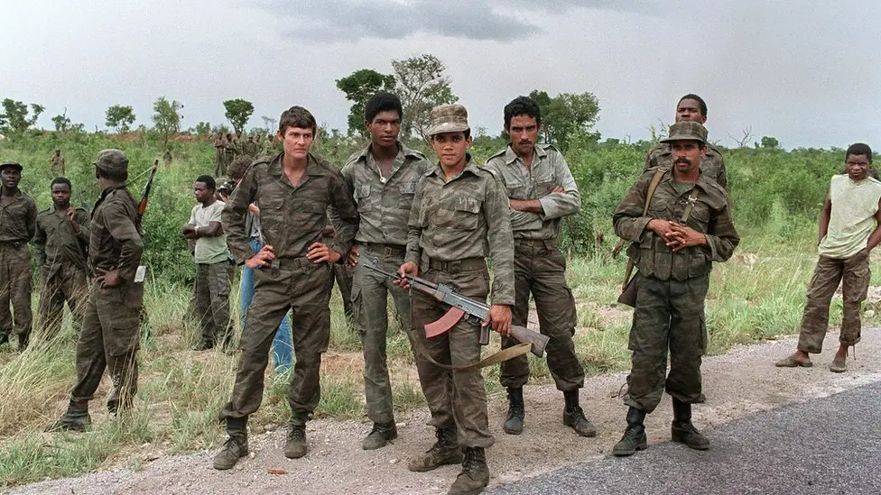

Comparing U.S. and U.S.S.R. Strategies for Maintaining Global Power (1947-1991)
The U.S. sought to contain communism through economic aid, military alliances, and supporting anti-communist regimes.
The U.S.S.R. promoted communist revolutions, established satellite states, and provided military/economic aid to allies.
The U.S. pledges to support nations resisting communism, beginning with $400 million to Greece and Turkey.
The Soviet Union establishes the Council for Mutual Economic Assistance to coordinate economic planning among communist states.
The first major proxy war with the U.S. supporting South Korea and the USSR/China backing North Korea.
Soviets crush anti-communist uprising in Hungary, demonstrating willingness to use force to maintain control.
Failed U.S.-backed invasion of Cuba highlights American attempts to overthrow communist regimes.
U.S. supports UNITA while USSR backs MPLA in a decades-long conflict over Angola's post-colonial government.
U.S. funds Contras to fight against Soviet-backed Sandinista government in Nicaragua.
USSR invades Afghanistan to support communist government, while U.S. funds mujahideen resistance.
Click to flip and learn more
Click to flip and learn more
1. Which doctrine stated that the USSR had the right to intervene in any socialist country threatened by "counter-revolution"?
2. In which proxy war did the U.S. support UNITA rebels against the Soviet-backed MPLA government?
3. What was the name of the U.S. program that provided economic aid to Western Europe after WWII?